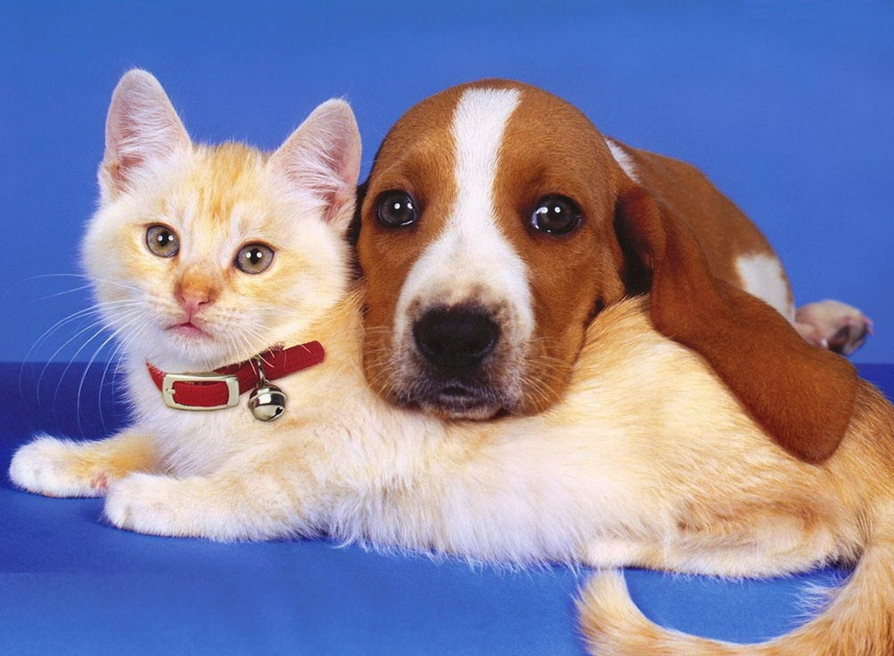
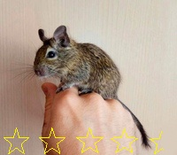

«Лапа» – крупная ветеринарная клиника Волгограда, оснащенная современным диагностическим оборудованием.
Наша главная гордость – опытные, любящие свою профессию и животных врачи, которые регулярно проходят
повышение квалификации в крупнейших ветклиниках страны. Мы используем достоверную диагностику и
эффективное лечение в ветеринарной практике, чтобы домашние питомцы – собаки, кошки, грызуны,
птицы – были здоровыми и радовали своих хозяев. Также ветклиника «Лапа» периодически оказывает
лечебную помощь бездомным животным за собственные средства, сотрудничает с волонтерами нашего города,
которые помогают бездомным животным.
Мы ценим каждого посетителя. За нашу 10тилетнюю практику более 160 тысяч довольных хозяев нашим сервисом,
более 60 тысяч проведеных операций, свыше 140 спасенных жизней ваших питомцев.
Хожу сюда со своей кошкой не первый год, квалифицированные специалисты, знают своё дело!
И корм подберут и проконсультируют!
Особая благодарность Иванову А.А., золотые руки у человека!!!!

Мой любимый дегу жив только благодаря профессионализму местных работников.
Операция прошла успешно.
Но вот с внешним видом самого заведения надо что-то делать: ступеньки у входа - чёрти что, не подойти, стены обшарпанные.
Очереди большие, прошу учесть, но вцелом всё хорошо. Цена соответствует качеству, моя собака довольна.

Отзывы
Наших клиентов